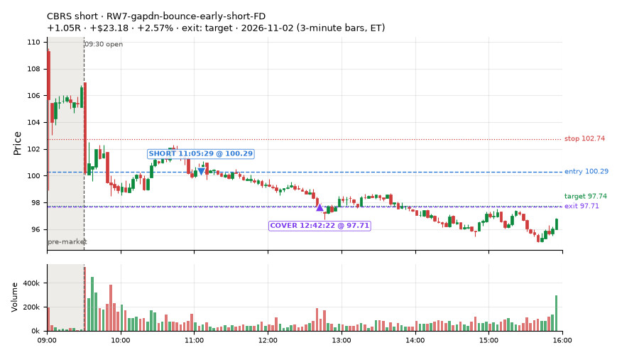
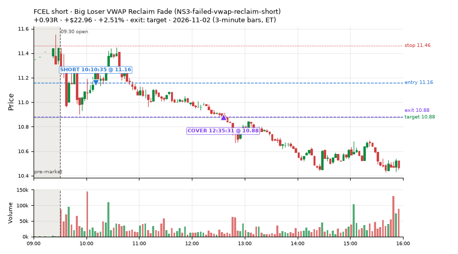
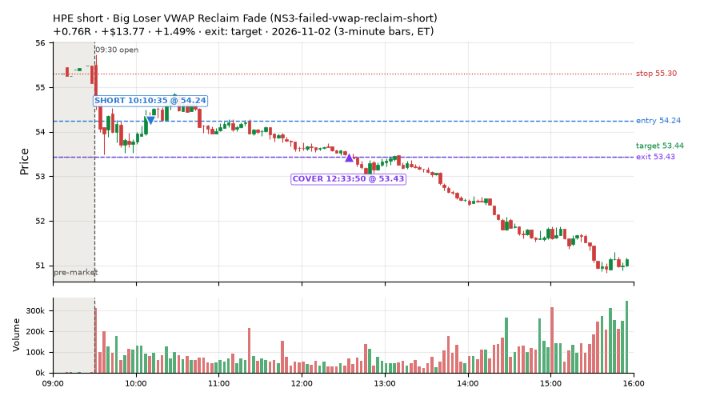
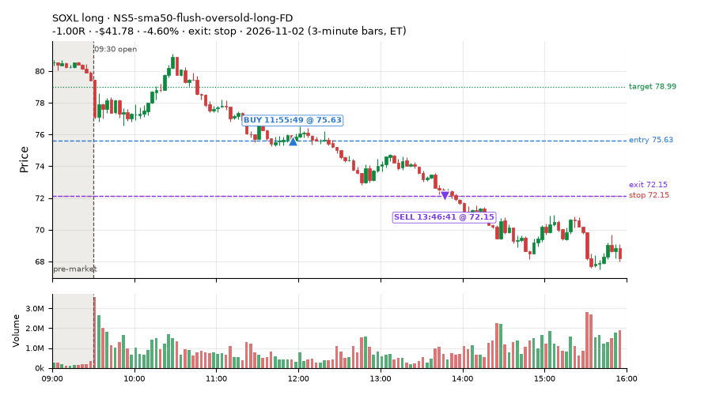
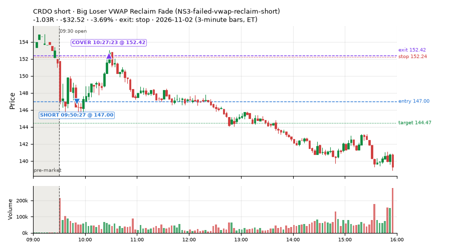
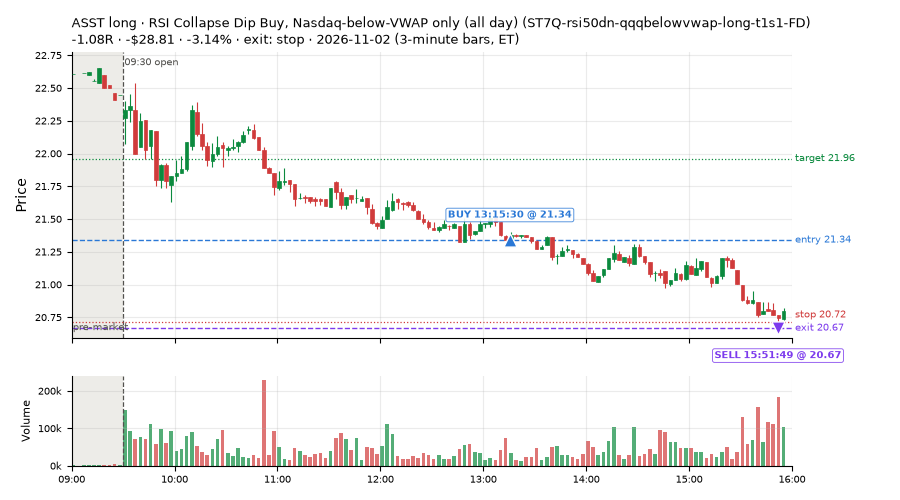
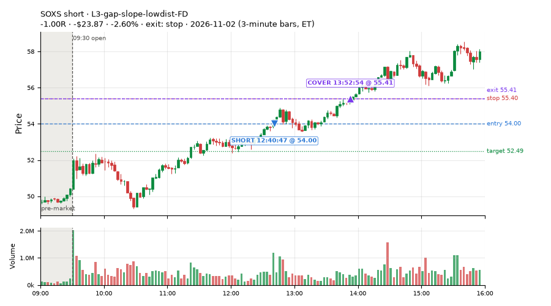
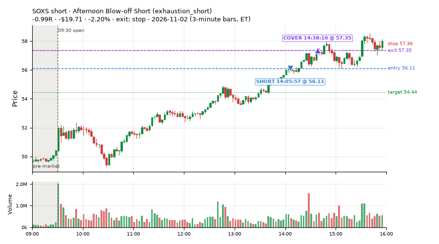

37 trades · win rate 30% · P/L $-178.95
PROBATION: no live setup has passed both locked test periods. 10 owner-directed setups added 2026-10-08 (MarcoFlow top 5 + 5 new), untested live. RW6G1 (RW6 + VWAP band guard) added 2026-10-09, probation.

| Symbol | Setup | Side | In | Out | Entry | Exit | Exit reason | % gained | P/L |
|---|---|---|---|---|---|---|---|---|---|
| CBRS | RW7-gapdn-bounce-early-short-FD | short | 11:05 | 12:42 | 100.29 | 97.71 | target | +2.57% | $23.18 |
| FCEL | Big Loser VWAP Reclaim Fade (NS3-failed-vwap-reclaim-short) | short | 10:10 | 12:35 | 11.16 | 10.88 | target | +2.51% | $22.96 |
| HPE | Big Loser VWAP Reclaim Fade (NS3-failed-vwap-reclaim-short) | short | 10:10 | 12:33 | 54.24 | 53.43 | target | +1.49% | $13.77 |
| Symbol | Setup | Side | In | Out | Entry | Exit | Exit reason | % lost | P/L |
|---|---|---|---|---|---|---|---|---|---|
| SOXL | NS5-sma50-flush-oversold-long-FD | long | 11:55 | 13:46 | 75.63 | 72.15 | stop | -4.60% | $-41.78 |
| CRDO | NS3-failed-vwap-reclaim-short | short | 09:50 | 10:27 | 147.00 | 152.42 | stop | -3.69% | $-32.52 |
| ASST | ST7Q-rsi50dn-qqqbelowvwap-long-t1s1-FD | long | 13:15 | 15:51 | 21.34 | 20.67 | stop | -3.14% | $-28.81 |
| SOXS | L3-gap-slope-lowdist-FD | short | 12:40 | 13:52 | 54.00 | 55.41 | stop | -2.60% | $-23.87 |
| SOXS | exhaustion_short | short | 14:05 | 14:38 | 56.11 | 57.35 | stop | -2.20% | $-19.71 |








Signal to fill: median 2s, 90th percentile 4s (37 trades). Bars close each minute; the order follows the bar close.
Best excursion (MFE): median 0.31R; worst (MAE) median 1.02R. 43% of trades never got +0.25R in our favour; 0 reached +1R and still closed at or below 0.
| Symbol | Setup | Best R | Worst R | Closed R |
|---|---|---|---|---|
| PHM | exhaustion_short-FD | +0.77 | -1.05 | -1.04 |
| MDT | MF3-open-flowsell-rsi5hi-FD | +0.55 | -1.13 | -1.00 |
| IWV | MF3-open-flowsell-rsi5hi-FD | +0.18 | -1.32 | -1.25 |
| CNM | orb20_a | +0.36 | -1.02 | -1.06 |
| SQQQ | exhaustion_short-FD | +0.41 | -1.06 | -1.00 |
| Entry time | Trades | Win | Avg R | P/L |
|---|---|---|---|---|
| 09:50-10:30 | 14 | 43% | -0.24 | $-8.50 |
| 10:30-11:30 | 8 | 25% | -0.45 | $-20.24 |
| 11:30-13:00 | 6 | 33% | -0.46 | $-85.95 |
| 13:00-14:00 | 2 | 0% | -1.04 | $-34.33 |
| 14:00-16:00 | 7 | 14% | -0.63 | $-29.93 |
| Setup | Trades | Win | Avg R | Adj R (net of SPY) | P/L |
|---|---|---|---|---|---|
| L3-gap-slope-lowdist-FD | 2.0 | 50% | -0.07 | -0.28 | $-17.60 |
| Early Sellers into a Pop (all day) (MF3-open-flowsell-rsi5hi-FD) | 8.0 | 25% | -0.61 | -0.46 | $-16.20 |
| Sellers into Strength (all day) (MF5-flowsell-vwapup-rsi5hi) owner-directed; holdouts once: Sep-Oct -0.001R n264, Apr-Jun -0.010R n1199 | 4.0 | 50% | -0.06 | -0.11 | $4.13 |
| NS1-rsidip-rsi5pop-long-FD | 1.0 | 0% | -1.01 | -0.21 | $-5.52 |
| Big Loser VWAP Reclaim Fade (NS3-failed-vwap-reclaim-short) owner-directed; holdouts once: Sep-Oct +0.119R n65, Apr-Jun -0.136R n524 | 3.0 | 67% | +0.22 | +0.16 | $4.21 |
| NS5-sma50-flush-oversold-long-FD | 2.0 | 0% | -1.03 | -0.90 | $-58.90 |
| RW6G1-ns2-up3-vwap2sd-short-FD | 1.0 | 100% | +0.82 | +0.52 | $6.72 |
| RW7-gapdn-bounce-early-short-FD | 2.0 | 100% | +0.87 | +0.67 | $34.73 |
| ST4-emadn-long-am-t1s05-FD | 2.0 | 0% | -1.00 | -0.86 | $-31.77 |
| RSI Collapse Dip Buy, Nasdaq-below-VWAP only (all day) (ST7Q-rsi50dn-qqqbelowvwap-long-t1s1-FD) | 1.0 | 0% | -1.08 | -0.80 | $-28.81 |
| Afternoon Blow-off Short (exhaustion_short) failed Apr-Jun holdout: -0.020R/trade over 622 trades | 2.0 | 0% | -0.99 | -1.19 | $-29.91 |
| exhaustion_short-FD | 4.0 | 25% | -0.46 | -1.25 | $-20.49 |
| Index Last-Half-Hour Momentum (intraday_momentum) failed Apr-Jun holdout: -0.091R/trade over 147 trades | 4.0 | 0% | -0.81 | -0.26 | $-6.74 |
| 20-Minute Opening Range Breakout (orb20_a) failed Apr-Jun holdout: -0.040R/trade over 421 trades | 1.0 | 0% | -1.06 | -0.89 | $-12.80 |
Market direction (SPY, beta 1) accounted for $22.73 of today's $-178.95; the rest ($-201.68) came from the setups themselves. Avg R net of SPY: -0.44 (incl. a hedge leg's cost; report only).
29 setups live today. Today: 137 signals, 37 taken, 8 lost because another setup held the symbol (6%). Since 2026-10-09 (17 sessions): 8208 signals, 3402 taken, 744 lost to other setups (9%). Peak open positions today 16 of 400 slots. Earnings blackout removed 1857 symbols before scanning.
Simulated playing time (not live): 4474 what-if trades of signals not taken, avg -0.14R, 48% winners; of them 591 lost to another setup (avg +0.02R).
Silent: RW6G1-ns2-up3-vwap2sd-short, IDX1-qqq100-0955-TQQQ-trail, IDX1-qqq100-0955-TQQQ-hold, IDX2-spy075-0945-3x-trail, IDX3-spy075-0955-3x-trail, IDX5-spy050-0945-3x-trail · Crowded out: ST3-rsi5up-short-pm-t1s1-FD, MF3-open-flowsell-rsi5hi, RW4-ns3-adv150-short-FD, RW4-ns3-adv150-short, MF4-h40-open-flowsell-FD, NS3-failed-vwap-reclaim-short-FD · Starved: MF1-945-flowsell-vwapup, LIQ-pdl-sweep-open15-vwap-long, ST5-pdbrkup-short-mid-t05s1-FD, MF5-flowsell-vwapup-rsi5hi, exhaustion_short-FD, orb20_a, NS2-sma50break-overbought-short, MF1-945-flowsell-vwapup-FD
| Prio | Setup | Today sig / taken | Sessions | Signals / taken / trades | Taken/day | Expected/day | Lost to other setups | Lost to (setup n) | Top skip reasons | SIMULATED: not-taken n / avg R / win | Verdict |
|---|---|---|---|---|---|---|---|---|---|---|---|
| 1 | Early Sellers Above VWAP MF1-945-flowsell-vwapup | 9 / 0 | 7 | 21 / 5 / 5 | 0.71 | 5.33 | 0 | – | spread / quote / size 8, other 7, not shortable / shorts off 1 | 16 / +0.27R / 31% | starved 0.71 entries/day vs ~5.33 expected |
| 2 | Big Gainer Fade with VWAP Band Guard RW6G1-ns2-up3-vwap2sd-short | 0 / 0 | 9 | 0 / 0 / 0 | 0.00 | 0.40 | 0 | – | – | 0 / – | silent no signals in 9 session(s), ~3.6 expected |
| 3 | Index Dip Bounce 1 TQQQ IDX1-qqq100-0955-TQQQ-trail | 0 / 0 | 12 | 0 / 0 / 0 | 0.00 | – | 0 | – | – | 0 / – | silent no signals in 12 session(s); no expected rate on file |
| 4 | Index Dip Bounce 1 TQQQ (hold) IDX1-qqq100-0955-TQQQ-hold | 0 / 0 | 12 | 0 / 0 / 0 | 0.00 | – | 0 | – | – | 0 / – | silent no signals in 12 session(s); no expected rate on file |
| 5 | Index Dip Bounce 2 3x S&P IDX2-spy075-0945-3x-trail | 0 / 0 | 12 | 0 / 0 / 0 | 0.00 | – | 0 | – | – | 0 / – | silent no signals in 12 session(s); no expected rate on file |
| 6 | Index Dip Bounce 3 3x S&P IDX3-spy075-0955-3x-trail | 0 / 0 | 12 | 0 / 0 / 0 | 0.00 | – | 0 | – | – | 0 / – | silent no signals in 12 session(s); no expected rate on file |
| 7 | Index Dip Bounce 5 3x S&P IDX5-spy050-0945-3x-trail | 0 / 0 | 12 | 0 / 0 / 0 | 0.00 | – | 0 | – | – | 0 / – | silent no signals in 12 session(s); no expected rate on file |
| 8 | Prior-Day Low Sweep Reversal to VWAP LIQ-pdl-sweep-open15-vwap-long | 0 / 0 | 15 | 1 / 1 / 1 | 0.07 | 0.38 | 0 | – | – | 0 / – | starved 0.07 entries/day vs ~0.38 expected |
| 9 | ST5-pdbrkup-short-mid-t05s1-FD ST5-pdbrkup-short-mid-t05s1-FD | 0 / 0 | 16 | 19 / 2 / 2 | 0.12 | 0.78 | 0 | – | not shortable / shorts off 9, split-tape short gate 6, spread / quote / size 1 | 17 / -0.32R / 47% | starved 0.12 entries/day vs ~0.78 expected |
| 10 | ST8-volspikedn-long-pm-t1s1-FD ST8-volspikedn-long-pm-t1s1-FD | 0 / 0 | 16 | 12 / 10 / 10 | 0.62 | 1.05 | 1 | orb20_a 1 | symbol held by another setup 1, spread / quote / size 1 | 2 / -0.07R / 50% | slow 3.1 entries/week; ~19 weeks to 60 trades |
| 11 | RSI Collapse Dip Buy, Nasdaq-below-VWAP only (all day) ST7Q-rsi50dn-qqqbelowvwap-long-t1s1-FD | 1 / 1 | 7 | 3 / 3 / 3 | 0.43 | 1.25 | 0 | – | – | 0 / – | slow 2.1 entries/week; ~28 weeks to 60 trades |
| 12 | ST6-volspikeup-short-mid-t1s1-FD ST6-volspikeup-short-mid-t1s1-FD | 0 / 0 | 16 | 23 / 6 / 6 | 0.38 | 1.24 | 4 | RW4-ns3-adv150-short-FD 3, NS3-failed-vwap-reclaim-short 3, NS3-failed-vwap-reclaim-short-FD 1 | split-tape short gate 6, symbol held by another setup 4, not shortable / shorts off 4 | 15 / -0.21R / 33% | slow 1.9 entries/week; ~32 weeks to 60 trades |
| 13 | ST3-rsi5up-short-pm-t1s1-FD ST3-rsi5up-short-pm-t1s1-FD | 2 / 0 | 16 | 19 / 2 / 2 | 0.12 | 1.35 | 6 | ST2-slope20up-long-am-t05s1-FD 4, RW4-ns3-adv150-short-FD 2, NS3-failed-vwap-reclaim-short 2 | symbol held by another setup 6, not shortable / shorts off 4, split-tape short gate 4 | 12 / -0.11R / 33% | crowded-out 6 of 19 signals (32%) lost to setups already holding the symbol |
| 14 | ST4-emadn-long-am-t1s05-FD ST4-emadn-long-am-t1s05-FD | 5 / 2 | 16 | 28 / 15 / 15 | 0.94 | 2.77 | 6 | RW7-gapdn-bounce-early-short-FD 2, RW5-heat30-flowsell-rsi5pop-gapdn-short-FD 2, orb20_a 1 | symbol held by another setup 6, spread / quote / size 5, other 2 | 13 / -0.56R / 23% | slow 4.7 entries/week; ~13 weeks to 60 trades |
| 15 | NS4-pm-vwap-reclaim-oversold-short-FD NS4-pm-vwap-reclaim-oversold-short-FD | 3 / 0 | 16 | 56 / 26 / 26 | 1.62 | 3.57 | 4 | L3-gap-slope-fromopen-FD 3, NS1-rsidip-rsi5pop-long-FD 1 | not shortable / shorts off 13, spread / quote / size 10, symbol held by another setup 4 | 30 / +0.10R / 47% | slow 8.1 entries/week; ~7 weeks to 60 trades |
| 16 | RW6G1-ns2-up3-vwap2sd-short-FD RW6G1-ns2-up3-vwap2sd-short-FD | 1 / 1 | 16 | 40 / 28 / 28 | 1.75 | 3.73 | 2 | RW6G1-ns2-up3-vwap2sd-short-FD 1, RW6-ns2-up3-short-FD 1, NS2-sma50break-overbought-short-FD 1 | not shortable / shorts off 3, split-tape short gate 3, spread / quote / size 3 | 12 / +0.14R / 58% | slow 8.8 entries/week; ~7 weeks to 60 trades |
| 17 | Panic Flush Reversal (3x volume) CWT05-flush-m05-v3-long | 1 / 0 | 9 | 35 / 24 / 24 | 2.67 | – | 0 | – | spread / quote / size 9, daily loss cap 1, other 1 | 11 / -0.23R / 55% | slow 13.3 entries/week; ~4 weeks to 60 trades |
| 18 | L3-gap-slope-lowdist-FD L3-gap-slope-lowdist-FD | 24 / 2 | 16 | 269 / 59 / 59 | 3.69 | 9.76 | 8 | RW6-ns2-up3-short-FD 3, NS2-sma50break-overbought-short-FD 3, L3-gap-slope-rsi5hi-FD 3 | not shortable / shorts off 109, daily loss cap 72, spread / quote / size 13 | 203 / -0.25R / 41% | ok 18.4 entries/week |
| 19 | NS1-rsidip-rsi5pop-long-FD NS1-rsidip-rsi5pop-long-FD | 3 / 1 | 16 | 58 / 41 / 41 | 2.56 | 5.39 | 5 | L3-gap-slope-fromopen-FD 5 | spread / quote / size 6, symbol held by another setup 5, daily loss cap 5 | 17 / -0.13R / 59% | slow 12.8 entries/week; ~5 weeks to 60 trades |
| 20 | NS5-sma50-flush-oversold-long-FD NS5-sma50-flush-oversold-long-FD | 4 / 2 | 16 | 56 / 34 / 34 | 2.12 | 6.32 | 13 | RW4-ns3-adv150-short-FD 10, NS3-failed-vwap-reclaim-short 10, NS3-failed-vwap-reclaim-short-FD 8 | symbol held by another setup 13, spread / quote / size 4, daily loss cap 2 | 12 / +0.25R / 67% | slow 10.6 entries/week; ~6 weeks to 60 trades |
| 21 | Sellers into Strength (all day) MF5-flowsell-vwapup-rsi5hi | 7 / 4 | 11 | 68 / 34 / 34 | 3.09 | 15.47 | 13 | MF5-flowsell-vwapup-rsi5hi-FD 10, MF3-open-flowsell-rsi5hi 2, CWT12-coil-k6-long 1 | symbol held by another setup 13, spread / quote / size 13, not shortable / shorts off 5 | 33 / -0.01R / 48% | starved 3.09 entries/day vs ~15.47 expected |
| 22 | Big Loser VWAP Reclaim Fade NS3-failed-vwap-reclaim-short | 13 / 3 | 14 | 82 / 46 / 46 | 3.29 | 3.03 | 5 | LIQ-orl-sweep-open15-s25-long 3, heat_fade_short 1, heat_fade_short-FD 1 | not shortable / shorts off 19, spread / quote / size 11, symbol held by another setup 5 | 28 / -0.00R / 46% | ok 16.4 entries/week |
| 23 | Early Sellers into a Pop (all day) MF3-open-flowsell-rsi5hi-FD | 17 / 8 | 16 | 235 / 104 / 104 | 6.50 | 24.16 | 39 | MF5-flowsell-vwapup-rsi5hi-FD 17, RW5-heat30-flowsell-rsi5pop-gapdn-short-FD 9, RW3-gapdn-rsi5pop-flowsell-short-FD 6 | daily loss cap 42, symbol held by another setup 39, spread / quote / size 24 | 123 / +0.14R / 60% | ok 32.5 entries/week |
| 24 | Early Sellers into a Pop MF3-open-flowsell-rsi5hi | 9 / 0 | 11 | 60 / 6 / 6 | 0.55 | 9.19 | 38 | MF3-open-flowsell-rsi5hi-FD 35, MF5-flowsell-vwapup-rsi5hi 13, MF5-flowsell-vwapup-rsi5hi-FD 7 | symbol held by another setup 38, spread / quote / size 11, not shortable / shorts off 3 | 54 / -0.39R / 33% | crowded-out 38 of 60 signals (63%) lost to setups already holding the symbol |
| 25 | RW7-gapdn-bounce-early-short-FD RW7-gapdn-bounce-early-short-FD | 11 / 2 | 16 | 600 / 331 / 331 | 20.69 | 59.92 | 37 | LIQ-orl-sweep-open15-s25-long 11, RW1-gapdn-bounce-flowsell-short-FD 9, MF2-open-rsimidhi-flowsell-FD 7 | daily loss cap 110, not shortable / shorts off 68, symbol held by another setup 37 | 266 / +0.27R / 66% | ok 103.4 entries/week |
| 26 | Afternoon Blow-off Short exhaustion_short | 11 / 2 | 16 | 110 / 55 / 55 | 3.44 | 12.12 | 6 | L3-gap-slope-fromopen-FD 3, RW2-exhaustion-noon-adv150-short-FD 2, L3-gap-slope-rsi5hi-FD 1 | not shortable / shorts off 28, split-tape short gate 15, symbol held by another setup 6 | 53 / -0.06R / 51% | ok 17.2 entries/week |
| 27 | exhaustion_short-FD exhaustion_short-FD | 11 / 4 | 16 | 209 / 78 / 78 | 4.88 | 64.64 | 25 | exhaustion_short 14, RW2-exhaustion-noon-adv150-short-FD 8, L3-gap-slope-fromopen-FD 5 | daily loss cap 53, not shortable / shorts off 37, symbol held by another setup 25 | 123 / -0.37R / 34% | starved 4.88 entries/day vs ~64.64 expected |
| 28 | Index Last-Half-Hour Momentum intraday_momentum | 4 / 4 | 16 | 32 / 31 / 31 | 1.94 | 2.37 | 0 | – | daily loss cap 1 | 1 / -0.26R / 0% | slow 9.7 entries/week; ~6 weeks to 60 trades |
| 29 | 20-Minute Opening Range Breakout orb20_a | 1 / 1 | 16 | 63 / 25 / 25 | 1.56 | 6.79 | 0 | – | trigger missed between polls 21, spread / quote / size 8, not shortable / shorts off 6 | 32 / +0.14R / 53% | starved 1.56 entries/day vs ~6.79 expected |
Every trade is attached as a CSV you can open and edit in Excel or Google Sheets. Live page: https://misiti15.github.io/MCF/live/